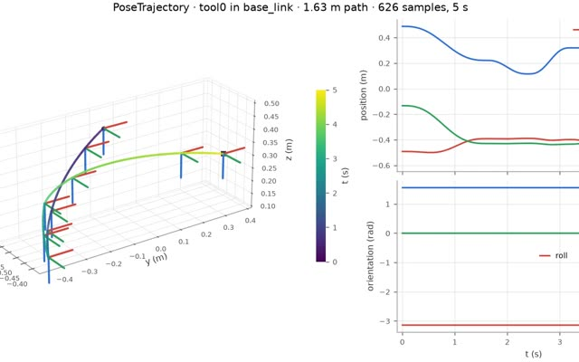
A UR5e tool path as a PoseTrajectory: its stock .plot(), 626 samples
Robotics backend in plain Python · open source, MIT
Assemble, don't rewrite. 14 small robotics packages that all speak one vocabulary of robot types, so a new robot task is mostly plugging together parts that already work.
Messages, models, controllers, reach, collision, thermal limits, trajectories, metrics, viewers and sim-to-real calibration.
Each package keeps its own repo, PyPI name and release schedule; robot-sdk is the one install that pins a set known to work together, the way a ROS release does.
pip install robot-sdk14 packages · 82 shared types · 387 type uses, scanned from the code
Real recordings, cut from the packages' own sites, reports and dashboards, three seconds each. Click a name for its card:
The packages never import each other. They agree on the robot_msgs types instead, so the output of one is
the input of the next: a JointTrajectory out of a planner goes straight into a controller, a metric, a viewer
or a twin. You write the glue; the robotics is already written and tested.
Poses, joint states, limits and trajectories as frozen dataclasses; actuators, arms and sensors as generic models.
Where the tool can reach and with which IK branch, which link pairs may touch, then one JointTrajectory out.
Controllers tick a JointState into a ServoCommand; heat and burst limits on the motors; ports carry the types between processes.
Tracking and stop error over the same streams, checks with a verdict, activity and interventions across a fleet.
A stock viewer for every type, A/B trajectory comparison, and a calibrated twin that replays real runs.
Bottom to top, the way they depend on each other: a package imports only from layers below it. Every card is the
package's own declaration (its robot-sdk.toml), and its picture is cut from its own recordings; hover one to play it.
Landing page opens the package's own site where it has one.

A UR5e tool path as a PoseTrajectory: its stock .plot(), 626 samples
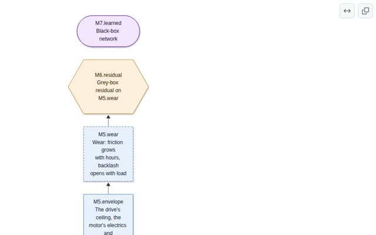
The servo model ladder: M0 learned black box up to M7, each rung one physical effect
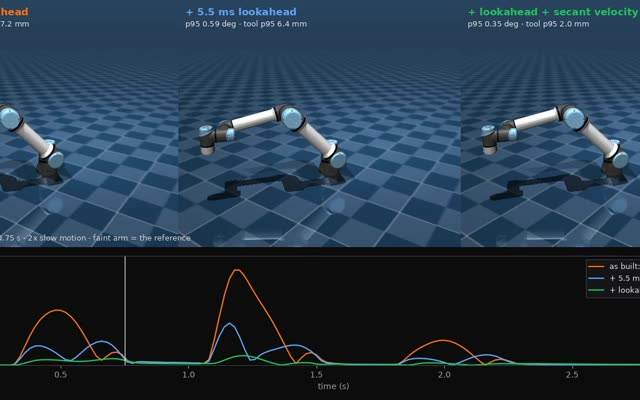
Three controller layouts on one simulated UR5e trajectory: tracking error underneath
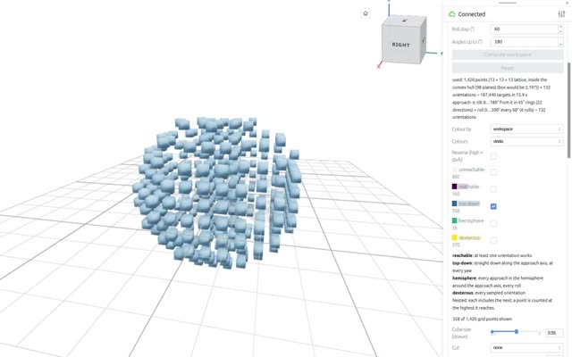
The UR5e's workspace in viser: every point coloured by how much of the pose the arm controls
Motor or board heat, burst limits, duty cycles, how hard a joint may be pushed.
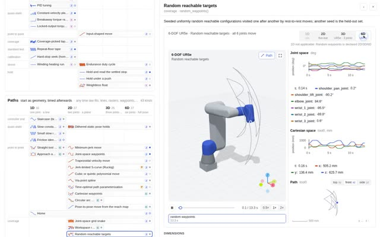
The trajectory catalog: pick a generator, see its path on the arm and its joint curves
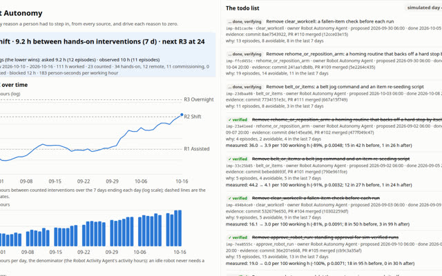
Hands-on interventions per day and the agent's to-do list, from a simulated fleet
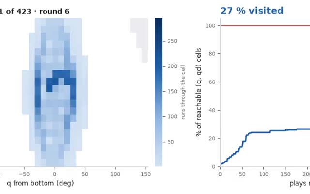
Coverage of a real CAN-bus servo's state space, growing play by play
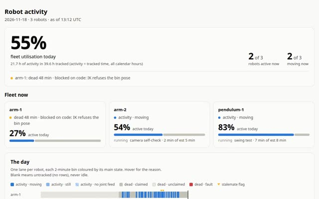
Fleet utilisation: what each robot did today, and why it stood still
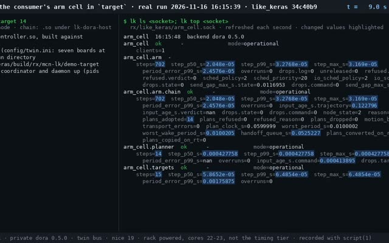
A live arm cell over dora: every port's rate, latency and drops, refreshed each second
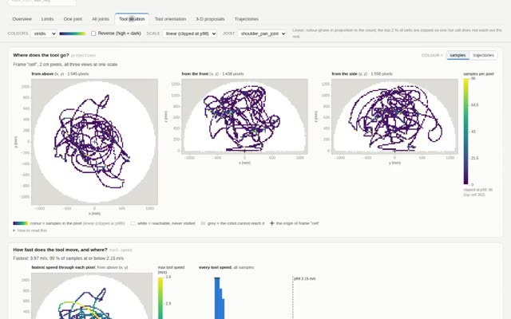
Trajectory coverage: which joint and tool space a dataset of UR5e runs actually visits
Viewers
A/B trajectory comparison report; a runs workbench over many sites; trajectory and grasp coverage viewers
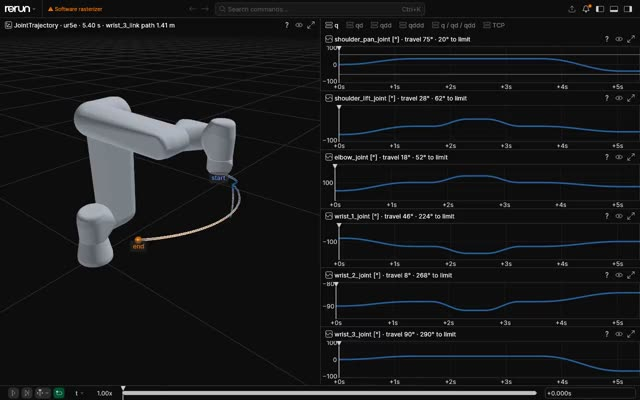
A JointTrajectory in Rerun: the arm moving, the tool's position and speed beside it
Viewers
A stock Rerun viewer for every robot_msgs type: show, save or stream, each with a preconfigured blueprint
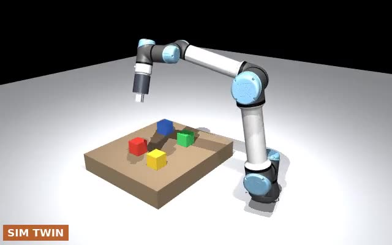
The simulated twin of a UR5e pick cell, the scene camera's view
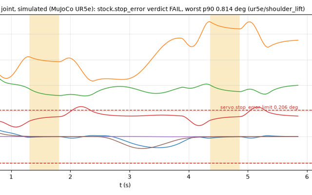
From the pick-and-place below: shaded, the stops stock.stop_error scored against its limit
Packages above and below, the shared robot_msgs types in the band between them. An arrow into a type means
the package produces it; an arrow out of a type means it consumes it. Every arrow is a public function signature
(19 citations, in the docs). Hover or tap a package or a type to trace it.
Scroll the diagram sideways →
One script and no new robotics code: each stage is a call into a package that hands the next one a robot_msgs
type. The arm is a simulated UR5e (MuJoCo); every number below is from a real run of the script, including the check that fails.
Scroll the diagram sideways →
# 1 · robot_reach: the arm, and whether it reaches the four tool points
58arm = ur5e()
107reach = reach_map(arm, targets, tool_down)
# 2 · robot_trajectories: the pick-and-place motion, timed by minimum jerk
118leg_timing = WaypointTrajectoryGenerator.minimum_jerk(peak_speed_fraction=0.3)
119cycle = pick_and_place(space, pick=pick_point, place=place_point, lift_m=LIFT_M, waypoint_generator=leg_timing)
# 3 · robot_controllers: the trajectory controller, ticked against the simulated arm
141jtc = controller("joint_trajectory_controller").build(cycle)
149for tick in range(round((cycle.duration + SETTLE_S) / step_s)):
150 state = JointState(name=kinematics.joint_names, position=data.qpos.copy(), velocity=data.qvel.copy())
151 tick_start = time.perf_counter()
152 command, _defines = jtc.tick(state, step_s)
153 compute_s.append(time.perf_counter() - tick_start)
154 data.ctrl[:] = command.position + (servo_kd / servo_kp) * command.velocity
155 mujoco.mj_step(model, data)
# 4 · robot_metrics: tracking and stop error, folded over the run
190metrics = Collection(aliases)
191values = metrics.values(metrics.fold(run))
# 5 · robot_diagnostics: the stock stop-error check, per joint
203stop_check = replace(DEFAULTS["servo.stop_error"].config, side="output")
204per_joint = []
205for index, joint in enumerate(kinematics.joint_names):
206 joint_run = Trajectory(t=tick_times, q_rad=measured.positions[:, index], q_target_rad=target.positions[:, index],
207 qd_target_rad_s=target.velocities[:, index], run=f"sim/{joint}", device=joint, source="sim")
208 per_joint.append(evaluate("stock.stop_error", stop_check, [joint_run], subject=f"ur5e/{joint}"))From examples/pick_and_place.py, lines 58–208 of 310, as it runs; the rest passes the objects along and saves the plots.
UR5e DH parameters → robot_reach.Arm
6 joints, closed-form IK with 8 branches; tool at home (-0.492, -0.133, 0.488) m
Arm + 4 tool points x 1 orientation → robot_reach.ReachMap
all 4 reachable tool-down; working IK branches pick 8, place 8, above pick 8, above place 8 (of 8)
JointSpace + 2 tool points → robot_msgs JointTrajectory
5.35 s, 2675 samples at 500 Hz, 8 segments; tool path 1.077 m; peak joint speed 79.9 deg/s (minimum_jerk, 30 % of the limit)
JointTrajectory, then JointState each tick → robot_msgs ServoCommand each tick
2924 ticks at 500 Hz on the simulated (MuJoCo) UR5e, status 'done'; median tick 12 us; peak servo torque 39.5 N.m (shoulder_lift)
Run{target, state: JointTrajectory; tool/target, tool/state: PoseTrajectory} → dict of values with units
tool error RMS 9.15 mm, max 12.28 mm; worst joint tracking shoulder_lift max 0.90 deg; worst stop error shoulder_lift 0.839 deg
robot_diagnostics Trajectory per joint → robot_diagnostics Result (DiagnosticStatus shape)
FAIL: worst ur5e/shoulder_lift p90 0.814 deg vs limit 0.206 deg (3/6 joints pass)
Plant: simulated (MuJoCo UR5e): MuJoCo Menagerie universal_robots_ur5e/ur5e.xml, its own PD position servos. Ran 2026-11-23 in 1.63 s.


The failing check is the point: the arm sags under gravity and this run has no gravity feed-forward, so the
shoulder misses its stop-error limit, and robot_diagnostics' stock check says so without anyone writing one.
The run is also in the docs, stage by stage: Run.
Python 3.11 or newer. Take the whole set, or just the package you need.
Every package at versions tested together.
pip install robot-sdkEach is its own PyPI install, with only the dependencies below it.
pip install robot-trajectoriesAn agent skill that lists every package and what it is for, so an agent assembles instead of rewriting.
git clone https://github.com/zacharyyamaoka/robot_sdk
ln -s $PWD/robot_sdk/skill ~/.claude/skills/robot-sdkWhen one needs another's behaviour it takes a function or a Protocol. Swap any package without touching its neighbours.
tools/check_layers.py enforces it.
Never another Pose class: every package reads and writes the same robot_msgs types, so outputs plug into inputs.
Every shared type, with who takes and returns it.
Every hour each package's tests, its declaration, its types and its PyPI release are re-checked from its own repo; what fails is shown, not hidden.
Health, per package.
Read the docs, browse the package map or the types, see what is failing, or start from the repo.